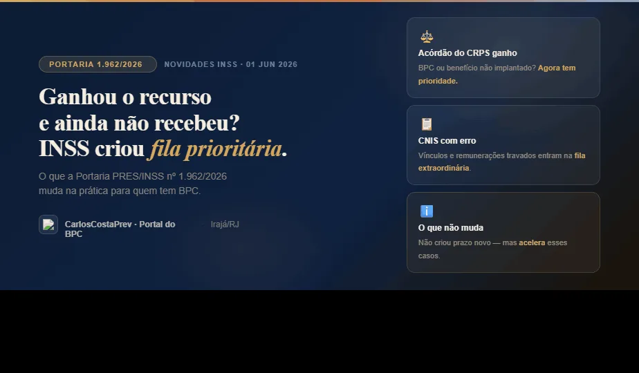

Portaria INSS 1.962/2026: INSS cria fila prioritária para quem ganhou recurso no CRPS
O INSS publicou a Portaria 1.962/2026 ampliando as chamadas filas extraordinárias do Programa de Gerenciamento de Benefícios. Se você ganhou um recurso no CRPS e ainda não recebeu — ou está com o benefício travado por erro no CNIS — este artigo é para você.
Portaria PRES/INSS nº 1.962, de 1º de junho de 2026
Publicada no Diário Oficial da União · Edição 102 · Seção 1 · Página 67
Altera a Portaria PRES/INSS nº 1.919, de 12 de janeiro de 2026
O que a portaria mudou, na prática
A principal novidade é que o INSS ampliou as filas extraordinárias do Programa de Gerenciamento de Benefícios (PGB), dando prioridade para dois tipos de demanda que costumam demorar muito:
1. Acórdãos do CRPS — o que muda
O Conselho de Recursos da Previdência Social (CRPS) é o órgão onde o segurado recorre quando o INSS nega um benefício. O prazo é de 30 dias após a negativa. Quando o CRPS decide a favor do segurado, emite um acórdão determinando a implantação do benefício.
O problema: mesmo com o acórdão favorável em mãos, muitos segurados aguardavam meses para o INSS efetivamente implantar o benefício e começar a pagar. Com a Portaria 1.962/2026, esses casos passam a integrar a fila extraordinária — ou seja, são tratados com prioridade dentro do sistema.
✅ Se você ganhou no CRPS e o BPC/LOAS ou outro benefício ainda não foi implantado — seu caso agora tem tratamento prioritário. Guarde o número do acórdão e acompanhe no Meu INSS.
2. Atualização de CNIS — o fim de um travamento crônico
O CNIS (Cadastro Nacional de Informações Sociais) registra vínculos de emprego, remunerações e contribuições. Erros nesse cadastro são uma das causas mais comuns de bloqueio de benefícios — o sistema simplesmente não consegue concluir a análise enquanto houver inconsistência.
A portaria incluiu na fila extraordinária os pedidos de:
- Atualização de vínculos — emprego não registrado ou registrado errado
- Atualização de remunerações — salários incorretos que afetam o cálculo
- Atualização de códigos de pagamento — erros técnicos que travam o processamento
💡 Na prática: se seu benefício está parado por "pendência no CNIS", a portaria sinaliza que o INSS vai direcionar servidores para resolver esses casos primeiro.
O que a portaria NÃO faz
É importante ser claro sobre os limites desta norma:
- Não criou prazo novo — o INSS continua sem um deadline legal específico para esses casos
- Não garante análise imediata — entrar na fila prioritária não significa resolução no dia seguinte
- Não é automático — você ainda precisa acompanhar pelo Meu INSS e, se necessário, buscar orientação
⚠️ Se você já espera há muito tempo mesmo com acórdão favorável, ainda é possível buscar tutela judicial para forçar o INSS a cumprir no prazo. A portaria ajuda, mas não é garantia.
Resumo em uma frase
O INSS criou prioridade para implantar benefícios já ganhos em recurso (CRPS) e para corrigir informações do CNIS que costumam travar aposentadorias, revisões e concessões — incluindo o BPC/LOAS.
O que fazer agora
- Se ganhou no CRPS — guarde o número do processo e do acórdão. Acesse o Meu INSS e verifique se o benefício foi implantado. Se não foi, entre em contato.
- Se tem pendência no CNIS — solicite a atualização formalmente pelo Meu INSS (serviço "Atualização de CNIS"). Se o INSS demorar, documente os pedidos.
- Se está em ambas as situações — procure orientação especializada. A demora pode gerar direito a atrasados (valores retroativos) desde a data do acórdão.
Ganhou no CRPS e ainda não recebeu?
Nossa equipe analisa seu caso gratuitamente pelo WhatsApp.
Não perca o prazo para cobrar o INSS.
Conteúdo informativo do Portal do BPC · CarlosCostaPrev — Especialista Previdenciário · Atendimento presencial na Praça Nossa Senhora da Apresentação, 223, Sala 206, Irajá/RJ, próximo ao Metrô de Irajá · (21) 96423-8080
Baseado na Portaria PRES/INSS nº 1.962/2026, publicada no Diário Oficial da União de 02/06/2026, Edição 102, Seção 1, Página 67. Este conteúdo é informativo e não substitui análise individual.
← Início · Patologias que dão BPC · Simulador BPC
CarlosCostaPrev — Especialista Previdenciário · CNPJ: 15.648.800/0001-80 · Responsabilidade judicial: Alexandre Del Rio Furtado — Advogado — OAB/RJ 270.465.